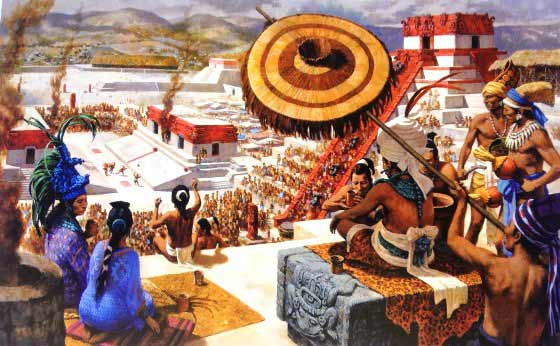
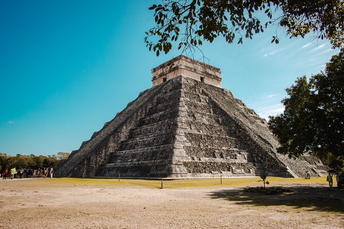
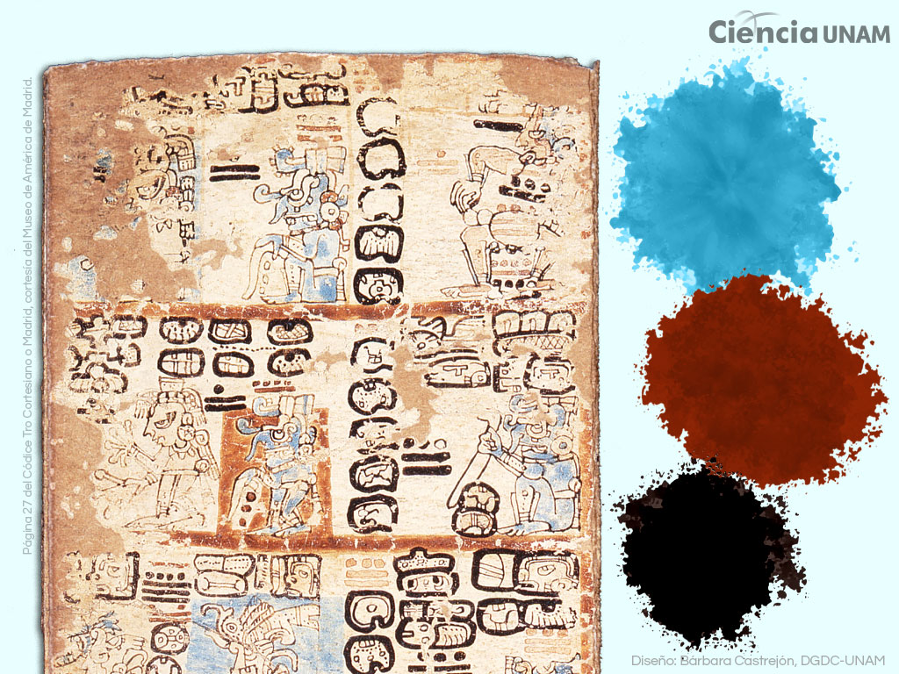

INTRODUCCION
Se cree que la palabra “maya” viene del antiguo nombre de Yucatán, Ma’ya’ab, que significa, literalmente, “los no muchos”, o más liberalmente, “los elegidos”. Aunque existen registros del pueblo maya que datan de hasta 8000 a.C., la cultura maya como tal comenzó a formarse socialmente alrededor del año 2000 a.C. Los mayas fueron una de las civilizaciones mesoamericanas más destacadas, habitando el sureste de México, Guatemala, Belice, Honduras y El Salvador por más de 3,000 años.

La cultura maya es una de las civilizaciones más importantes y fascinantes de Mesoamérica, destacada por su gran desarrollo intelectual, artístico y científico. Surgió alrededor del año 2000 a.C. y alcanzó

su máximo esplendor durante el periodo Clásico (250–900 d.C.), en territorios que hoy abarcan el sureste de México, Guatemala, Belice, Honduras y El Salvador. Los mayas construyeron impresionantes ciudades como Chichén Itzá, Palenque y Tikal, caracterizadas por sus pirámides, templos y avanzados sistemas urbanos.
La sociedad maya estaba organizada en ciudades-estado independientes, cada una gobernada por un rey considerado intermediario entre los dioses y los hombres. La religión era fundamental en su vida cotidiana, basada en la adoración de múltiples deidades relacionadas con la naturaleza, como el dios del maíz, la lluvia y el sol.
A pesar de que muchas de sus grandes ciudades fueron abandonadas antes de la llegada de los españoles, la cultura maya no desapareció. Hoy en día, millones de personas descendientes de los mayas mantienen vivas sus lenguas, tradiciones y costumbres, especialmente en regiones como Quintana Roo y Yucatán, lo que demuestra la continuidad y riqueza de esta gran civilización.
Uno de los aspectos más sobresalientes de la cultura maya es su extraordinario avance en el conocimiento científico. En matemáticas, desarrollaron un sistema numérico vigesimal (base 20) e introdujeron el concepto del cero, algo que pocas civilizaciones lograron de manera independiente. En astronomía, realizaron observaciones precisas de los movimientos del Sol, la Luna, Venus y otros cuerpos celestes, lo que les permitió crear calendarios altamente exactos, como el Tzolk’in (calendario ritual)

y el Haab’ (calendario solar). Estos sistemas no solo servían para medir el tiempo, sino que también estaban profundamente ligados a sus creencias religiosas y a la organización de la vida cotidiana.